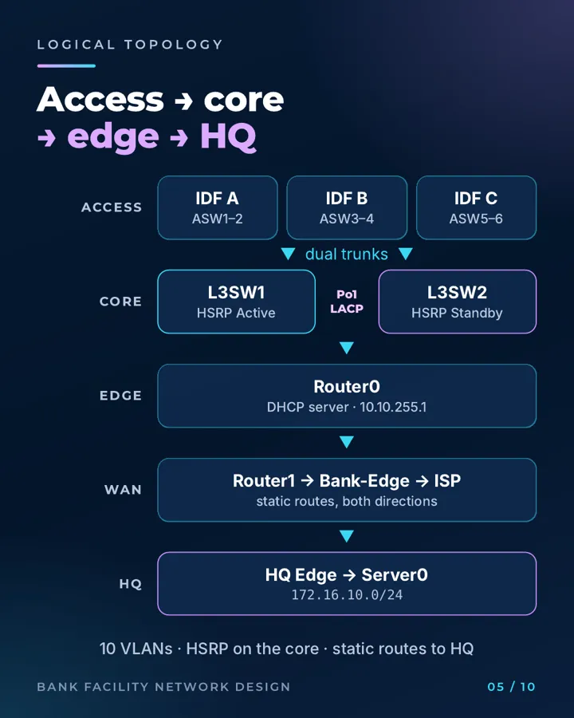

Bank Main Branch Network
A three-tier bank branch campus built in Cisco Packet Tracer, with ten VLANs, a redundant distribution pair and static routing to a head-office server. It's a joint project led by Nondumiso Mbuyazi (N0ND1); I built the Layer 3 and Layer 7 services: inter-VLAN routing with SVIs, HSRP, static routing to HQ, DHCP and DNS.
Includes troubleshooting write-ups for the lab tickets: INC-2101 (HSRP), TKT-2104 (DHCP relay), LESSON-01 and LESSON-02.
View repo →